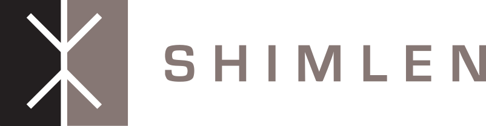
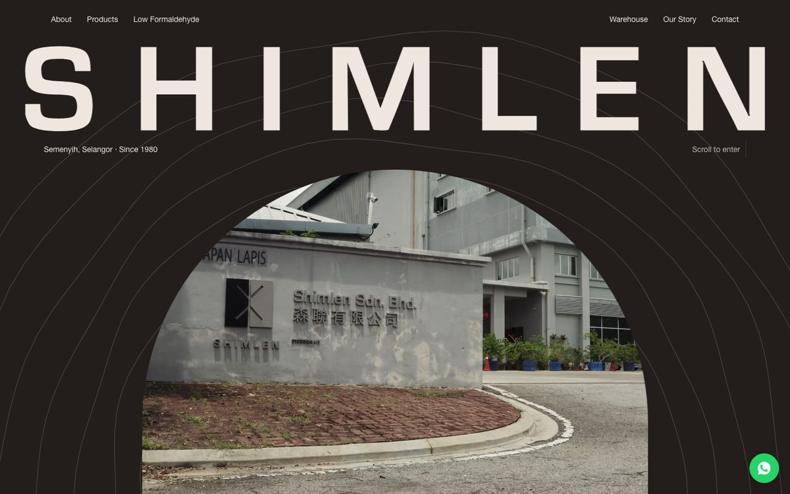
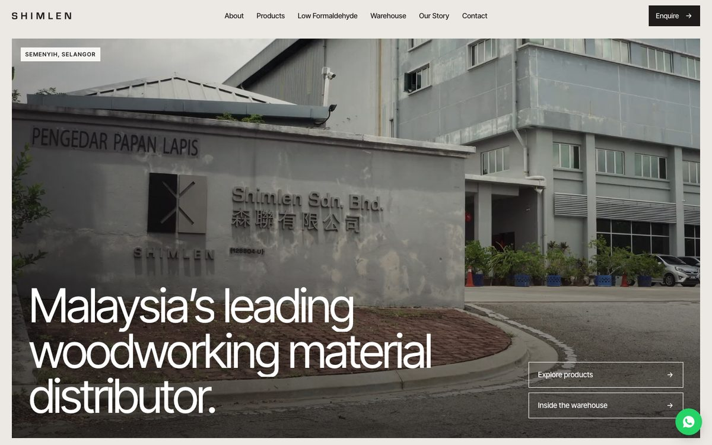
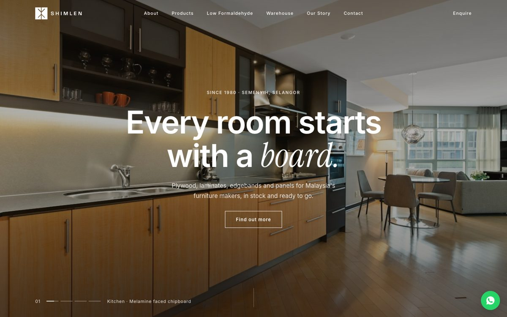
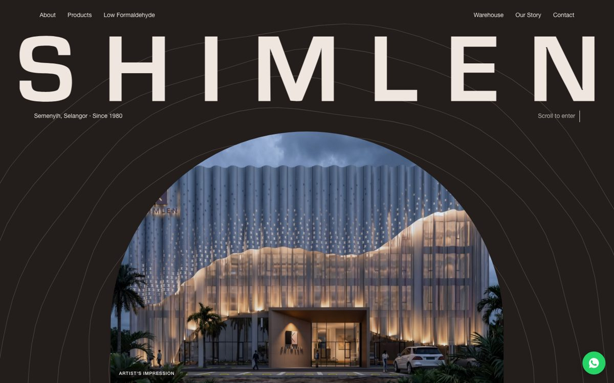
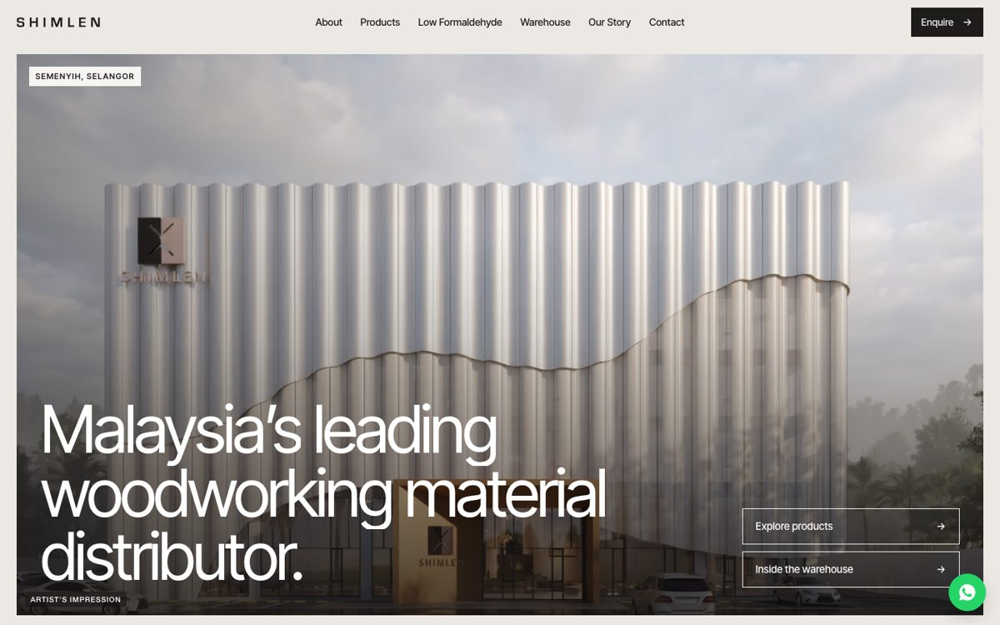

Eight looks for the new Shimlen website.
Two sets of four. The originals use Shimlen's own photos and films. The revamps keep each design's look, add more story, and open on renders of the new building, with sample photos elsewhere until the photoshoot, so the scale and ambition still come through.
Set A · Originals
Shimlen's own photos and films
Open
Bright and airy. Soft taupe panels, fine guide lines, rounded cards, and a statement that fills in as you read.
View option 1
Heartwood
Dark walnut and cream with serif headings. The SHIMLEN wordmark sits over an arch that opens into the drone film as you scroll, with tree-ring line art.
View option 2
Studio
Clean and editorial. Large, tight type on a strict, even grid, warm off-white and stone, with a full-width wordmark to close.
View option 3
Quiet
Laid out like Finsa. A full film with one line, rooms and words that interlock, a range slider, and a dotted timeline.
View option 4Set B · Revamped
Same designs, more story · pictures marked “Sample” or “Artist's impression” are placeholders
Open
Open, slow and calm. No loading screen: the new building drifts into view at dawn and fades to dusk. Then finished rooms, the people we work for, and our next home.
View revamp 1
Heartwood
Heartwood, dramatic. Tree rings draw in, then the arch opens onto the new building lit up at night. Board to room is told in arches.
View revamp 2
Studio
Studio, still. Nothing flies in: one fixed view of the new building in morning mist, big tight type, and an index of four views.
View revamp 3
Quiet
Quiet, youthful and visual. The views change through vertical strips, like the fluted façade, with finished rooms and board to room.
View revamp 4